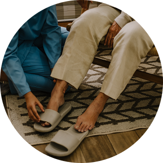

Humanização, respeito e excelência
no atendimento domiciliar.
A Home Care Servir é especializada em cuidado domiciliar humanizado e personalizado. Contamos com profissionais experientes e comprometidos em oferecer atenção, empatia e segurança, respeitando as necessidades únicas de cada paciente e sua família.
Saiba mais sobre nós
Auxilio nas atividades diárias
Acompanhamento 12h ou 24h
Administração de medicamentos sob orientação médica
Cuidados com a higiene e alimentação
Apoio emocional e físico durante internações
Turnos flexíveis (disponibilidade 24 horas)
Contamos com profissionais treinados e capacitados para oferecer um cuidado técnico, ético e acolhedor. Cada atendimento é personalizado, respeitando as necessidades específicas do paciente e da sua família porque acreditamos que cuidar vai além do protocolo: é escutar, entender e servir com excelência.

Atendimento humanizado
Cuidamos com empatia, escuta ativa e respeito por cada história.
Disponibilidade 24h
Estamos presentes sempre que você precisar
(dia e noite)
Equipe qualificada e confiável
Profissionais treinados e comprometidos com a excelência.
Contratos transparentes
Sem letras miúdas: clareza e confiança em cada etapa.
Cobertura na sua região
Atendimento onde você estiver, com agilidade e segurança.
Entre em contato com nossa equipe e descubra como podemos oferecer o cuidado que sua família merece.
Agende uma conversa